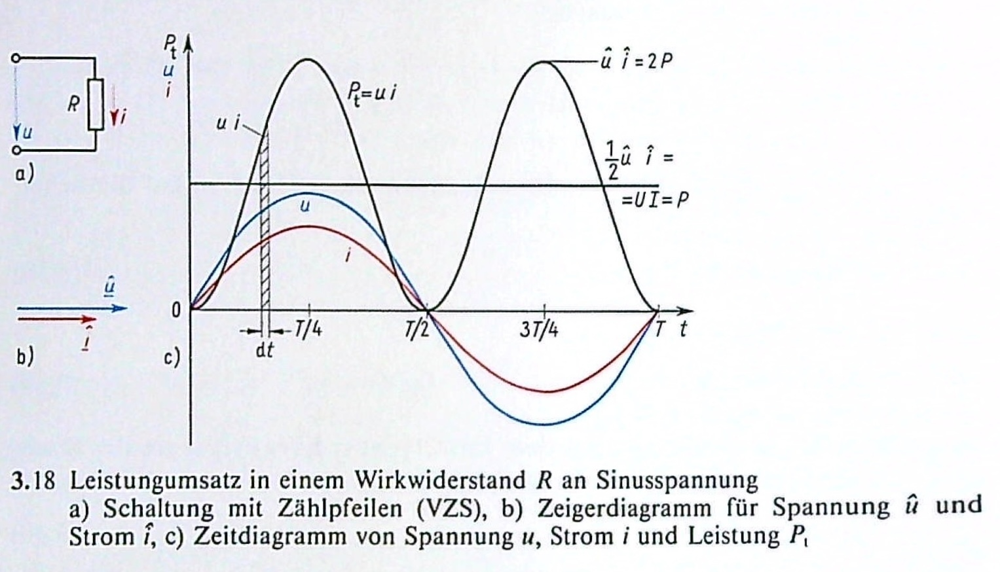
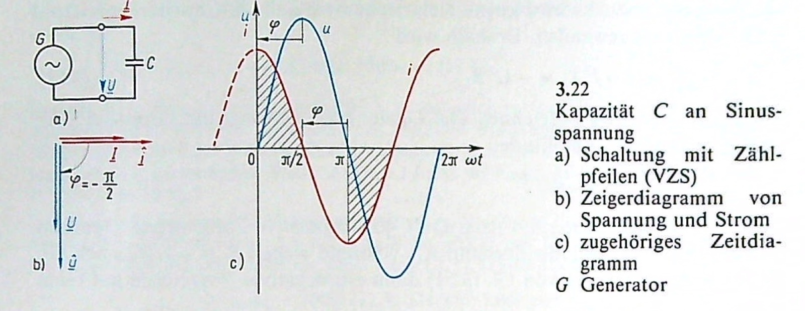
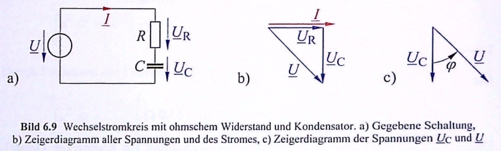
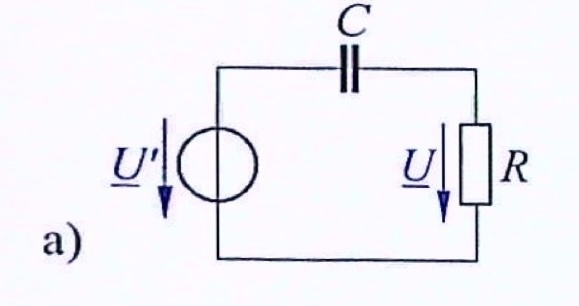
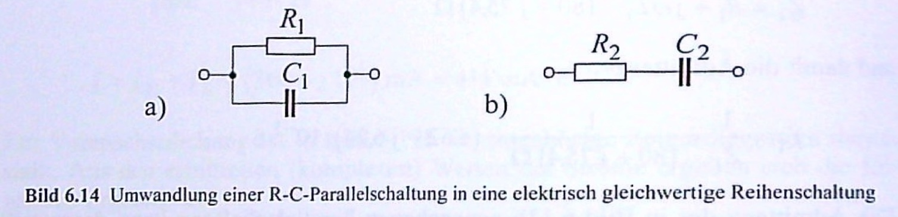

17 Verhalten der Grundzweipole 1
- Zweipole
- Wirkwiderstand
- Kapazität
- einfache Schaltungen
17.1 Zweipole
Alle Bauelemente mit zwei Anschlüssen bezeichnet man als Zweipol. Wenn diese keine Energie erzeugen, ist dies ein passiver Zweipol.
Aus Gleichstromschaltungen sind in Zusammenhang mit dem passiven Zweipole nur Widerstände R wirksam. Induktivitäten L verursachen bei Gleichstrom keine Spannung und Kapazitäten wirken bei Gleichstrom wie eine Leitungsunterbrechung.
Da die Spannung und der Strom nun, da diese Größen nun Wechselgrößen sind, mit einem magnetischen und elektrischen Feld (siehe Elektrodynamik) verkettet sind, wirken sie jetzt anders auf Kapazitäten und Induktivitäten.
Daher haben wir nun bei Wechselstrom, die drei passiven Zweipole Widerstand R, Kapazität C und Induktivität L. An diesen Bauteilen ist insbesondere auf den Zusammenhang von Spannung und Strom zu achten.
17.2 Wirkwiderstand
Als erstes betrachten wir den reinen Wirkwiderstand R (Resistanz) bzw. den reinen Wirkleitwert G = 1 / R (Konduktanz). Er liegt an einer Sinusspannung
\[u = \hat{u} \cdot \sin(\omega t)\]
17.2.1 Spannung, Strom und Phasenwinkel
Über das Ohmsche Gesetz kommt man an die Gleichung für den Strom:
\[i = G \cdot u = \frac{u}{R} = \frac{\hat{u}}{R}\sin(\omega t) = \hat{i} \cdot \sin(\omega t)\]
Strom i und Spannung u sind zu jeden Augenblick zueinander proportional (linearen Wirkwiderstand). Beide haben die gleiche Phasenlage, dass heißt einen Phasenwinkel von \(\varphi = 0\).

Ent. aus (Fricke und Vaske 1982)
17.2.2 Wirkleistung
Für den Zeitwert der Leistung gilt:
\[P_t = u \cdot i = i^2 \cdot R = \frac{u^2}{R} = \hat{u} \cdot \hat{i} \cdot sin^2(\omega t)\]

Entn. aus (Fricke und Vaske 1982)
Der Zeitwert der Leistung schwingt mit der doppelten Frequenz und ist immer positiv. Der Wirkwiderstand R nimmt also immer Energie auf.
Um einen Vergleich mit Gleichstrom machen zu können, schaut man sich die mittlere Leistung, also die Wirkleistung an:
\[P = \frac{1}{T} \int\limits_{0}^{T} u \cdot i dt = \frac{\hat{u} \cdot \hat{i}}{2} = \frac{\hat{u}}{\sqrt{2}} \cdot \frac{\hat{i}}{\sqrt{2}} = U \cdot I = R \cdot I^2 = \frac{U^2}{R}\]
Ein Heizofen, beispielsweise, erzeugt mit einer Nennspannung U und Nennleitung P die gleiche Wärme an Gleich- und Sinusspannung mit gleichen Zahlenwerten.
17.3 Kapazität
Hier wird erst mal die reine Kapazität betrachtet, also der Einfluss des elektrischen Feldes. Der Zuleitungswiderstand, eventuelle Ableitungen, dielektrischen Verluste und der Einfluss des magnetischen Feldes werden vernachlässigt.
17.3.1 Spannung, Strom und Phasenwinkel
Für den Ladestrom einer Kapazität C gilt:
\[i = C \frac{du}{dt}\]
Betrachtet man den Strom, der sich wieder über die Sinusspannung ergibt, bekommt man diese Gleichung:
\[i = C \frac{d(\hat{u} \cdot sin(\omega t))}{dt} = \omega C \hat{u} \cdot cos(\omega t)\]
mit
\[cos(\omega t) = sin(\omega t + \pi/2)\]
ergibt sich:
\[i = \omega C \hat{u} \cdot sin(\omega t + \pi/2) = \hat{i} \cdot sin(\omega t + \pi/2)\]

Entn. aus (Fricke und Vaske 1982)
Komplexer Schreibweise:
\[\underline{i} = C \frac{d \underline{u}}{dt} = C \hat{u} \frac{d e^{j \omega t}}{dt} = j \omega C \hat{u} e^{j \omega t} = j \omega C \underline{u}\]
Der Strom i eilt also bei einer Kapazität C gegenüber der Spannung u um den Phasenwinkel \(90° = \pi/2\) vor.
Beim Kondensator eilt der Strom vor!
Da nach der Norm der Strom die Bezugsgröße ist, sagt man, dass der Phasenwinkel \(\varphi = - \pi/2 = -90°\) ist.
17.3.2 Kapazitiver Blindwiderstand
Aus der obigen Gleichung könne wir den kapazitiven Blindleitwert \(B_C\) ableiten:
\[\hat{i} = \omega C \hat{u} = B_C \hat{u}\]
mit
\[B_C = \omega C = \frac{\hat{i}}{\hat{u}} = \frac{I}{U}\]
Stellt man dies komplex für den kapazitiven Blindwiderstand dar, erhält man:
\[\frac{\underline{u}}{\underline{i}} = \frac{\underline{\hat{u}}}{\underline{\hat{i}}} = \frac{\underline{U}}{\underline{I}} = \frac{1}{j \omega C} = \frac{1}{j B_C} = j X_C\]
17.4 Einfache Schaltungen
17.4.1 Reihenschaltung
Komplexer Maschensatz:
\[\sum_{\mu = 1}^n \underline{\hat{u}}_\mu = \sum_{\mu = 1}^n \underline{U}_\mu = 0\]
17.4.2 Parallelschaltung
Komplexer Knotenpunktsatz:
\[\sum_{\mu = 1}^n \underline{\hat{i}}_{\mu} = \sum_{\mu = 1}^n \underline{I}_{\mu} = 0\]
17.5 Übungen
17.5.1 Übung 5.1
(Fricke/Vaske Beispiel 3.17)
An einem Kondensator mit der Kapazität \(C = 8 \mu F\) liegt die Sinusspannung \(U = 220V\) an. Der Strommesser zeigt den Strom \(I = 0,55A\) an. Welche Frequenz liegt vor?
\[f = \frac{B_C}{2 \pi \cdot C} = \frac{I}{2 \pi U C} = \frac{0,55A}{2\pi \cdot 220V \cdot 8 \mu F} = 49,74 Hz\]
17.5.2 Übung 5.2
(Fricke/Vaske Beispiel 3.18)
In einer Schaltung wird bei der Frequenz \(f = 100 MHz\) und der Spannung \(U = 60 mV\) der durch die Schaltkapazität C verursachte Strom \(I = 0,6 mA\) gemessen.
Wie groß sind Blindleitwert \(B_C\) und Schaltkapazität C?
Wie groß ist bei gleichbleibender Spannung U der Strom \(I'\), wenn die Frequenz auf \(f' = 2 GHz\) erhöht wird?
\[B_C = \frac{I}{U} = \frac{0,6 mA}{60 mV} = 10 mS\]
\[C = \frac{B_C}{\omega} = \frac{10 mS}{2 \pi \cdot 100 MHz} = 15,92 pF\]
\[I' = I \frac{f'}{f} = 0,6 mA \frac{2 GHz}{100 MHz} = 12 mA\]
17.5.3 Übung 5.3
(Fricke/Vaske Beispiel 3.25)
Die folgende Schaltung zeigt die Spannungen \(\underline{U}_{q1} = 100V \angle(-100°)\), \(\underline{U}_{q2} = 50V \angle(-90°)\), \(\underline{U}_1 = 80V \angle(20°)\), \(\underline{U}_2 = 70V \angle(-20°)\) und \(\underline{U}_3 = 90V \angle(-40°)\). Bestimme die Spannung \(\underline{U}_4\).

Entn. aus (Fricke und Vaske 1982)

Entn. aus (Fricke und Vaske 1982)
\[\underline{U}_{q1} - \underline{U}_1 + \underline{U}_4 - \underline{U}_{q2} - \underline{U}_2 + \underline{U}_3 = 0\]
\[\underline{U}_4 = (89,36 + j109,75)V = 141,5V \angle(50,85°)\]
17.5.4 Übung 5.4
(Fricke/Vaske Beispiel 3.29)
Wirkwiderstand \(R = 500 \Omega\) und Kapazität \(C = 5 \mu F\) liegen in Reihe. Für die Freqeunz \(f = 50 Hz\) ist der komplexe Widerstand in Exponentialform zu bestimmen.
Tipp: Beachtet wie der Wirkwiderstand und Blindwiderstand in der komplexen Ebene liegen.
\[X_C = -\frac{1}{\omega C} = -\frac{1}{2 \pi \cdot 50Hz \cdot 5\mu F} = -636,6 \Omega\]
\[Z = \sqrt{R^2 + X_C^2} = \sqrt{500^2 + 636,6^2} \Omega = 809,5 \Omega\]
\[\varphi = \arctan \left( \frac{X_C}{R} \right) = \arctan \left( \frac{-636,6 \Omega}{500 \Omega} \right) = -51,85°\]
\[\underline{Z} = 809,5\Omega \angle(-51,85°)\]
17.5.5 Übung 5.5
(Hagmann Aufgabe 6.9)
Ein ohmscher Widerstand von \(R = 750 \Omega\) ist mit einem Kondensator der Kapazität \(C = 250 nF\) in Reihe geschaltet. Die Anordnung wird nach nach dem Bild von einem sinusfömigen Strom mit dem Betrag (Effektivwert) \(I = 50 mA\) und der Frequenz \(f = 800 Hz\) durchflossen.
Wie groß sind die Teilspannungen \(U_R\) und \(U_C\), sowie die Gesamtspannung U?
Welcher Phasenverschiebungswinkel \(\varphi\) besteht zwischen den Spannungen \(\underline{U}_C\) und \(\underline{U}\)?

Entn. aus (Hagmann 2019)
Blindwiderstand:
\[\frac{1}{\omega C} = \frac{1}{2 \pi \cdot 800Hz \cdot 250 nF} = 796 \Omega\]
komplexe Spannung Widerstand:
\[\underline{U}_R = \underline{I} R = 50 mA \cdot 750 \Omega = 37,5V\]
komplexe Spannung Kondensator
\[\underline{U}_C = \underline{I} \frac{1}{j \omega C} = \underline{I} \left( -j \frac{1}{\omega C} \right) = 50 mA \cdot (-j 796 \Omega) = 39,8V \cdot e^{-j 90°}\]
komplexe Spannung gesamt
\[\underline{U} = \underline{U}_R + \underline{U}_C = \left( 37,5 + 39,8 \cdot e^{-j 90°} \right) V = 54,7V \cdot e^{-j46,7°}\]
\[U_R = 37,5V\]
\[U_C = 39,8V\]
\[U = 54,7V\]
\[\varphi = \varphi_U - \varphi_{Uc} = -46,7° - (-90°) = 43,3°\]
17.5.6 Übung 5.6
(Hagmann Aufgabe 6.10)
Ein elektrischen Heizgerät für die Spannung \(U = 230V\) besitzt den Widerstand (Wirkwiderstand) \(R = 53 \Omega\). Das Gerät soll nach dem nachfolgenden Bild über einen Kondensator (C) an eine Wechselspannung von \(U' = 400V\) der Frequenz \(f = 50 Hz\) gelegt werden.
Wie groß muss die Kapazität C des Kondensators sein, damit das Heizgerät an \(U = 230V\) liegt?

Entn. aus (Hagmann 2019)

Entn. aus (Hagmann 2019)
\[I = \frac{U}{R} = \frac{230V}{53 \Omega} = 4.34A\]
\[U_C = \sqrt{(U')^2 - U^2} = \sqrt{400^2 - 230^2} V = 327V\]
Wir wissen:
\[I = U_C \omega C\]
umstellen:
\[C = \frac{I}{U_C \omega} = \frac{4,34 A}{327V \cdot 2 \pi \cdot 50 Hz} = 42,2 \mu F\]
17.5.7 Übung 5.7
(Hagmann Aufgabe 6.14)
In der Parallelschaltung nach den folgenden Bild hat der ohmsche Widerstand den Wert \(R_1 = 2 k\Omega\) und der Kondensator die Kapazität \(C_1 = 100 nF\). Die Anordnung soll für die Frequenz \(f = 1,4 kHz\) durch die im Bild angegebene Reihenschaltung ersetzt werden.
Welche Werte sind für den Widerstand \(R_2\) und die Kapazität \(C_2\) erforderlich?

Entn. aus (Hagmann 2019)
Blindleitwert Parallelschaltung:
\[B_C = \omega C_1 = 2 \pi \cdot 1,4 kHz \cdot 100 nF = 880 \mu S\]
Admittanz Parallelschaltung:
\[\underline{Y}_1 = \frac{1}{R_1} + jB_C = \frac{1}{2 k\Omega} + j880 \mu S = (500 + j880) \mu S\]
Impedanz Parallelschaltung:
\[\underline{Z}_1 = \frac{1}{\underline{Y}_1} = \frac{1}{(500 + j 880) \mu S} = (488 - j859) \Omega\]
Impedanz Reihenschaltung
\[\underline{Z}_2 = R_2 - j \frac{1}{\omega C_2}\]
gleichsetzen:
\[\underline{Z}_2 = R_2 - j \frac{1}{\omega C_2} = (488 - j859) \Omega\]
Kapazität:
\[C_2 = \frac{1}{2 \pi f X_C} = \frac{1}{2 \pi \cdot 1,4 kHz \cdot 859 \Omega} = 132nF\]